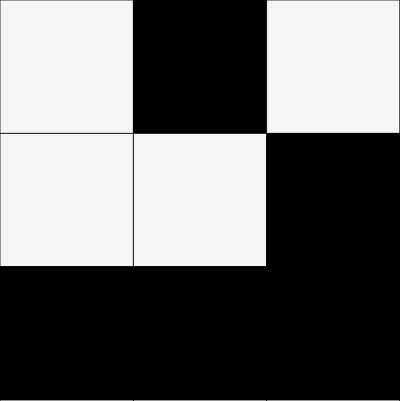
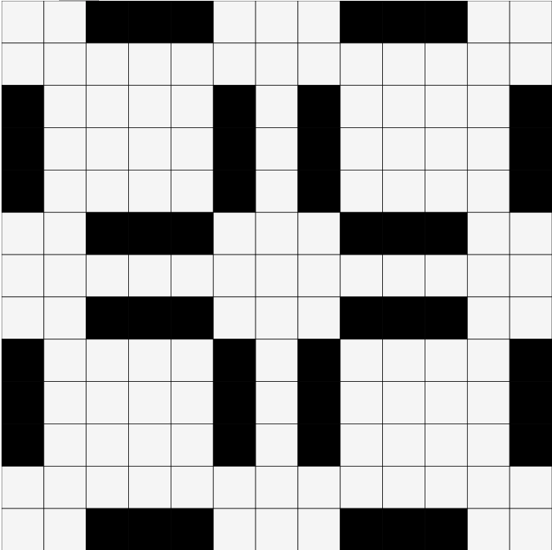
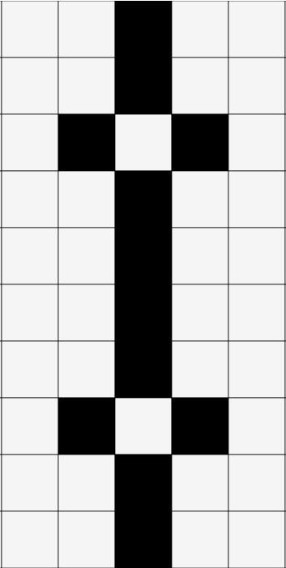

Conway's game of life is a zero-player game based on the following 5 rules:
-
A Black Square is considered alive
-
A White Square is considered dead
-
If a Black Square has 2 or 3 live neighbors, it lives on to the next iteration
-
Otherwise it dies, due to under/overpopulation
-
A dead cell comes to life if it has exactly 3 alive neighbors
If you're wondering where to start, try these few shapes:

Spaceship

3-Frame Pulsar

15-Frame Pulsar
STEP:0